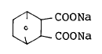
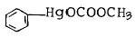
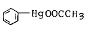
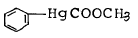
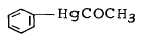

식물보호기사 (2003-05-25 기출문제)
1과목: 식물병리학
1. 애멸구가 매개하는 병으로서 우리 나라의 일반계 벼 품종에서 피해가 큰 병은?
- 줄무늬잎마름병
- 도열병
- 흰빛잎마름병
- 잎집무늬마름병
(정답률: 79%)

2. 바이로이드(viroid)에 의한 식물병은?
- 감자걀쭉병
- 대추나무빗자루병
- 담배모자이크병
- 벼오갈병
(정답률: 80%)
3. 사과탄저병의 발병에 알맞는 기상 조건은?
- 저온, 저습
- 저온, 다습
- 고온, 다습
- 고온, 저습
(정답률: 71%)
4. 다음 병 중 병원균이 그램양성(Gram positive)인 것은?
- 감자역병
- 감자X바이러스병
- 감자둘레썩음병
- 감자잎말림병
(정답률: 70%)
5. 식물병의 생육기간 중 1차 전염만 하는 병은?
- 벼도열병
- 담배모자이크병
- 잿빛곰팡이병
- 복숭아나무잎오갈병
(정답률: 61%)
6. 다음 병 중 병원이 경란전염하는 것은?
- 벼오갈병
- 담배모자이크병
- 벼도열병
- 오이모자이크병
(정답률: 64%)
7. 다음 병원균 중 임의부생체(조건부생체;Facultativesaprophyte)에 속하는 것은?
- 깜부기병균
- 오이덩굴쪼김병균
- 녹병균
- 흰가루병균
(정답률: 59%)
8. 다음 병해 중 진딧물이 옮기는 병은?
- 벼검은줄오갈병
- 밀녹병
- 담배모자이크병
- 오이모자이크병
(정답률: 60%)
9. 오이노균병균은 어떤 종류의 포자를 형성하는가?
- 동포자
- 하포자
- 자낭포자
- 유주(포)자
(정답률: 60%)
10. 다음 중 주로 공기전염을 하는 병은?
- 배추무사마귀병
- 배나무붉은별무늬병
- 오이모자이크바이러스
- 식물의 모잘록병
(정답률: 71%)
11. 파필라(papilla) 돌기물이 나타나 병원균 침입에 저항하는 저항성은?
- 동적 저항성
- 화학적 저항성
- 물리적 저항성
- 파이토알렉신(phytoalexin)
(정답률: 42%)
12. 식물병원균이 생성하는 대사산물로서 비특이적 독소는?
- Victorin
- Fusaric acid
- T-독소
- AT-독소
(정답률: 57%)
13. 식물병의 핵산 분석에 의한 진단 방법은?
- PCR(Polymerase chain reaction)을 이용한 병원체 동정
- 박테리오파아지(Bacteriophage)에 의한 진단
- 효소결합항체법에 의한 진단
- 황산구리법에 의한 진단
(정답률: 79%)
14. 파이토플라즈마 진단 방법이 아닌 것은?
- 전자 현미경적 관찰로 사부내의 세포 관찰
- 이병 절편을 Dienes' stain하여 광학 현미경으로 관찰
- 이병 조직의 사부를 DAPI로 염색하여 형광 현미경으로 관찰
- 명아주 지표식물을 이용한 생물 검정 관찰
(정답률: 67%)
15. 오이세균성점무늬병 원균이 증식하기 적합한 식물체내 부위는?
- 각피층
- 유조직의 세포간극
- 세포벽
- 형성층
(정답률: 75%)
16. 잎에 누렁증상(황화)이 나타나는 원인이 아닌 것은?
- 불소독성
- 질소결핍
- 저온
- 파이토플라스마 감염
(정답률: 49%)
17. 유성세대가 불확실한 불완전균에 있어서 변이균의 생성에 중요한 작용을 하는 것은?
- karyogamy
- cytogenesis
- heterokaryosis
- clamp connection
(정답률: 43%)
18. 기주식물의 IAA 생성을 촉진하는 병원체가 아닌 것은?
- 상추노균병
- 옥수수깜부기병
- 배추무사마귀병
- 사과붉은별무늬병
(정답률: 44%)
19. 주로 수간주입법으로 약제를 처리하는 병은?
- 사과나무검은별무늬병
- 밤나무줄기마름병
- 대추나무빗자루병
- 감나무탄저병
(정답률: 62%)
20. 고추역병의 방제법이 아닌 것은?
- 연작을 피한다.
- 가지과의 작물로 2-4년간 윤작한다.
- 다이센M-45, 리도밀 등을 경엽살포 한다.
- 배수가 잘 되도록 한다.
(정답률: 65%)
2과목: 농림해충학
21. 온실가루이는 다음 중 어느 목에 속하는가?
- 딱정벌레목
- 벌목
- 매미목
- 강도래목
(정답률: 63%)
22. 곤충의 순환계에 관한 설명 중 틀린 것은?
- 개방순환계이다.
- 세포외 용액에는 림프액과 혈액이 있다.
- 등핏줄은 소화관 윗쪽에 위치한다.
- 혈액은 혈장과 혈구세포로 이루어진다.
(정답률: 53%)
23. 딱정벌레목이 다른 곤충의 목(目)과 쉽게 구분될 수 있는 것은?
- 머리는 전구식이다.
- 시초(elytra)라는 앞날개를 갖고 있다.
- 완전 변태 또는 불완전 변태를 한다.
- 번데기는 대부분 피용이다.
(정답률: 64%)
24. 고자리파리의 월동충태는?
- 알
- 유충
- 번데기
- 성충
(정답률: 46%)
25. 표피를 형성하는 단백질, 지질, 키틴 화합물 등을 합성하고 분비해 주는 한 층의 세포군은?
- 표피층
- 진피세포
- 기저막
- 체색
(정답률: 74%)
26. 이화명나방의 암수 구별방법 중 잘못된 것은?
- 앞컷의 날개 센털은 3개가 있다.
- 수컷의 앞날 앞쪽 끝부분은 넓다.
- 암컷의 빛깔은 엷다.
- 숫컷은 암컷에 비해 크기가 크다.
(정답률: 65%)
27. 수도해충의 발생예찰에서 비래해충인 벼멸구가 7월 하순∼8월 상순에 벼 100주당 단시형 암컷 성충이 몇 마리 이상이면 요방제밀도에 해당하는가?
- 10마리 이상
- 20마리 이상
- 30마리 이상
- 40마리 이상
(정답률: 50%)
28. 해충 조사법 중 잘못 연결된 것은?
- 황색수반 - 진딧물, 애멸구
- 페로몬트랩 - 사과잎말이나방류
- 유아등 - 이화명나방
- 공중포충망 - 톡톡이
(정답률: 59%)
29. 곤충강의 특징이 아닌 것은?
- 입틀이 밖에 고정되어 있다.
- 더듬이는 한쌍이다.
- 다리에 마디가 없다.
- 외골격이 있다.
(정답률: 76%)
30. 유충 호르몬에 관한 설명 중 틀린 것은?
- 전흉선(앞가슴샘)에서 분비된다.
- 성충기관 원기의 발육을 억제한다.
- 성충기에 가까워짐에 따라 분비량이 줄어든다.
- 뇌신경 분지세포의 호르몬과 관계가 있다.
(정답률: 55%)
31. 배추좀나방의 발생 및 피해에 관하여 기술한 내용 중 맞는 것은?
- 다 자란 유충은 엽육속에 들어가 가해한다.
- 주로 배추등 십자화과 채소잎의 잎맥을 따라 엽육만 먹는 해충으로 완전한 잠엽성은 아니다.
- 비래해충으로 우리나라에는 월동하지 않으며 최근 그 발생이 증가되고 있다.
- 일본과 우리나라에만 분포하는 채소해충으로 잠엽성 해충의 일종이다.
(정답률: 50%)
32. 곤충의 자웅 생식기관 구조에서 서로 대응되지 않는 것은?
- 알집소관 - 고환소포
- 옆수란관 - 수정관
- 중앙수란관 - 사정관
- 수정낭샘 - 부속샘
(정답률: 52%)
33. 다음 중 훈증제로 쓰이는 약제는?
- 다이아지논
- 메칠브로마이드
- 페니트로치온(메프)
- 포스파미돈(포스팜)
(정답률: 77%)
34. 다음 곤충 중 복관(腹管)을 갖고 있는 것은?
- 낫밭이
- 좀
- 진딧물
- 톡톡이
(정답률: 65%)
35. 생물은 생태계내에서 생산자, 소비자, 분해자로 구분되는 데, 다음 중 생태적 지위가 다른 것은?
- 톡톡이
- 흰개미
- 굼벵이
- 거저리
(정답률: 47%)
36. 곤충의 알(卵) 구조와 기능으로 잘못 설명된 것은?
- 난각을 구성하는 단백질 분자간에 단순결합을 이루어 단순한 보호기능만 담당한다.
- 난에는 정자가 침투할 수 있는 정공이 있다.
- 알속에는 배자발생에 필요한 산소를 외부에서 흡수할 수 있는 기능과 알속에 함유하고 있는 수분을 잃지 않는 기능도 있다.
- 난황물질의 축적과정이 끝나면 난모세포막 바깥쪽에 난황막이 생성되고 곧이어 난각이 만들어져 배란준비가 완료된다.
(정답률: 66%)
37. 다음 해충 중 성충이 과일에 상처를 내서 해를 미치는 것은?
- 으름나방
- 모무늬잎말이나방
- 사과굴나방
- 사과응애
(정답률: 51%)
38. 곤충의 휴면에 대한 설명이 잘못된 것은?
- 모든 곤충은 무조건 휴면을 거친다.
- 부적절한 환경을 극복하기 위한 수단이다.
- 휴면을 유발시키는 요인은 온도, 일장, 먹이환경, 생리생태, 나이 등 다양한 요인이 있다.
- 곤충의 휴면은 절대휴면과 일시휴면으로 대별된다.
(정답률: 83%)
39. 근육 섬유를 수축시키는 무기이온은?
- Na+
- K+
- Ca++
- Mg++
(정답률: 52%)
40. 다음 설명 중 틀린 것은?
- 해충방제는 생물학적 측면과 경제적인 측면에 기초를 두고 수행한다.
- 포장에 해충이 있으면 무조건 방제한다.
- 방제는 해충밀도의 변동과 밀접한 관계가 있다.
- 방제결정은 해충에 의한 피해액과 방제비와의 관계에서 결정한다.
(정답률: 85%)
3과목: 재배학원론
41. 작물의 수해(水害)를 크게 하는 조건은?
- 저수온, 청수, 유수(流水)
- 저수온, 탁수, 유수
- 고수온, 청수, 유수
- 고수온, 탁수, 정체수
(정답률: 83%)
42. 연작의 피해가 비교적 적은 작물은?
- 감자
- 고구마
- 땅콩
- 토란
(정답률: 57%)
43. 3성 잡종의 F2 분리비는?
- 9 + 3 + 3 + 3 + 1
- 18 + 9 + 9 + 9 + 1
- 27 + 18 + 18 + 18 + 3 + 3 + 1
- 27 + 9 + 9 + 9 + 3 + 3 + 3 + 1
(정답률: 44%)
44. 작물의 조직속에 통기계(通氣系), 뿌리의 목화(木化) 및 부정근 등의 발생이 좋은 것과 관계가 깊은 것은?
- 내한성(耐旱性)
- 내습성(耐濕性)
- 내비성(耐肥性)
- 내동성(耐凍性)
(정답률: 60%)
45. 크세니아(Xenia) 현상이 잘 일어나는 작물은?
- 옥수수
- 메밀
- 호밀
- 완두
(정답률: 54%)
46. 품종 육성을 위한 교배모본의 표시 기호로서 사용되는 암컷은?
- ＜
- Ｘ
- ♂
- ♀
(정답률: 74%)
47. 게놈(genome) 이란?
- 염색체의 형태를 말한다.
- 염색체의 변화를 말한다.
- 염색체의 1개를 말한다.
- 염색체 1군(群)을 말한다.
(정답률: 52%)
48. 포장 용수량의 pF는 약 얼마인가?
- 0
- 2.7
- 3.9
- 4.2
(정답률: 69%)
49. 서릿발은 식질토양에서 토양수분이 몇 % 이상일 때 발생 하는가?
- 30%
- 40%
- 50%
- 60%
(정답률: 41%)
50. 잡종강세육종에서 특정 조합 능력은 검정할 수 없고 일반 조합능력만을 검정할 수 있는 방법은?
- 단교배
- 톱교배
- 2면교배
- 3원교배
(정답률: 66%)
51. 식물체가 관수된 후(冠水後) 대책으로서 잘못된 것은?
- 퇴수후 새로운 물을 갈아 댄다.
- 김을 매어 지중통기(地中通氣)를 좋게 한다.
- 침수후에는 병충해의 발생이 줄어들기 때문에 방제가 필요없다.
- 병충해 방제를 철저히 한다.
(정답률: 83%)
52. 노후화답(老朽化畓)의 재배대책으로 가장 효과가 적다고 인정되는 것은?
- 조기재배(早期栽培)
- 황산근비료(黃酸根肥料)의 시비
- 추비(追肥)중점시비
- 엽면시비(葉面施肥)
(정답률: 45%)
53. 작물이 습해를 받게 되는 직접적인 원인은?
- 호흡장해
- H+ 이온의 과다
- 미생물의 활동저해
- 양분의 손실
(정답률: 59%)
54. 같은 벼품종의 쌀이라도 평야지 보다 산간지에서 생산된 것이 더욱 잘 여물어서 밥맛이 좋다고 한다. 가장 주된 이유는?
- 밤낮의 기온 격차가 크기 때문
- 날씨가 좋기 때문
- 논토양이 비옥하지 못하기 때문
- 대주는 논물이 차기 때문
(정답률: 80%)
55. 콩 두이랑에 옥수수 한 이랑씩 서로 건너도록 재배하는 방식에 해당되는 것은?
- 간작
- 교호작
- 혼작
- 주위작
(정답률: 62%)
56. 다음 중 답전윤환의 효과는?
- 기지의 회피
- 잡초의 번무
- 지력감퇴
- 수도수량의 저하
(정답률: 80%)
57. 냉해에 의하여 발생이 많아지는 병해는?
- 도열병
- 잎집무늬마름병
- 흰잎마름병
- 줄무늬잎마름병
(정답률: 67%)
58. 저온기에 투명비닐을 이용하여 멀칭 재배할 때 유리한 점이 아닌 것은?
- 토양의 건조방지
- 지온상승
- 토양침식 방지
- 잡초발생 억제
(정답률: 58%)
59. 탈질현상을 경감시키는데 가장 효과적인 시비법은?
- 질산태질소비료를 논의 산화층에 시비
- 질산태질소비료를 논의 환원층에 시비
- 암모니아태질소비료를 논의 산화층에 시비
- 암모니아태질소비료를 논의 환원층에 시비
(정답률: 64%)
60. 토양이 강산성인 경우 가급태가 감소되기 쉬운 영양분은?
- N
- P
- Mn
- S
(정답률: 68%)
4과목: 농약학
61. 우리나라의 농약관리법상 농약에 속하지 않는 것은?
- 살서제
- 기피제
- 유인제
- 살충제
(정답률: 63%)
62. 천연 제충국 성분가운데 살충력이 가장 강한 것은?
- 피레트린Ⅰ
- 시네린Ⅰ
- 피레트린Ⅱ
- 자스모린Ⅱ
(정답률: 33%)
63. 농약의 부착성 및 습전성이 좋게 하기 위한 용도로 쓰여 지는 전착제는?
- 다이코 액제
- 실록세인 액제
- 씨엠 액제
- 클로르메퀘트 액제
(정답률: 46%)
64. 우리나라에서 훈증제의 사용대상이 아닌 곳은?
- 쌀바구미
- 검역대상 해충
- 재배중인 농산물
- 토양소독
(정답률: 65%)
65. R - Hg - X로 표시되는 유기수은제에서 X 에 해당되지 않는것은?
- -SO3H
- -Cl
- -OH
- -CH3
(정답률: 39%)
66. Parathion제의 살충기작이 일어나는 이유는?
- Cytochrome oxidase 를 저해하기 때문이다.
- Cholinesterase 의 작용을 저해하기 때문이다.
- 침투성이 있기 때문이다.
- 체내에서 분해가 빠르기 때문이다.
(정답률: 64%)
67. 아래 구조식 농약의 사용 범위는?

- 낙과 방제제
- 생장 억제제
- 낙엽 촉진제
- 발근 촉진제
(정답률: 34%)
68. 약량을 1/3∼1/5 로 줄여서 살포하여도 충분한 약효를 얻을 수 있는 살포 방법은?
- 미스트법
- 분무법
- 산분법
- 분의법
(정답률: 61%)
69. 다음 농약 중 페녹시계 제초제가 아닌 것은?
- 2,4-D
- MCPA
- MCPP
- DCPA
(정답률: 43%)
70. 농약관리법상 농약잔류 독성의 분류로서 옳은 것은?
- 작물잔류성농약, 토양잔류성농약, 수질오염성농약
- 논토양잔류성농약,밭토양잔류성농약,작물잔류성농약
- 작물잔류성농약, 토양잔류성농약, 어독성농약
- 수질오염성농약, 작물잔류성농약, 중금속잔류성농약
(정답률: 55%)
71. 물에 녹지 않는 주제를 Kaoline, benetonite 등의 점토광물과 계면활성제, 분산제를 배합하고 혼합 분쇄하여 제제화하는 제형을 무엇이라 하는가?
- 유제
- 입제
- 수용제
- 수화제
(정답률: 66%)
72. 농약의 급성독성을 실험하는데 흔히 쓰이는 동물은?
- 집파리
- 개구리
- 흰쥐
- 고양이
(정답률: 75%)
73. 사과의 부란병 방제에 사용되고 있는 약제는?
- 포리옥신에이(polyoxin A)
- 포리옥신 비(polyoxin B)
- 포리옥신 씨(polyoxin C)
- 포리옥신 디(polyoxin D)
(정답률: 52%)
74. 다음 약제 중 어독성이 가장 큰 것은?
- Aldrin
- Dieldrin
- Endrin
- DDT
(정답률: 42%)
75. 주로 벼의 도열병 방지약제로 쓰이는 항곰팡이제 살균제는?
- 비타박스
- 블라스티사이딘-S
- 톱신
- 다코닐
(정답률: 32%)
76. 약해의 원인 중 작물과 관련이 적은 것은?
- 작물의 종류
- 고온다습
- 생육시기
- 작물잔류량
(정답률: 45%)
77. 유기수은제 중 페닐초산수은의 구조식으로 옳은 것은?




(정답률: 36%)
78. 다음 중 유기인계 살충제는?
- EPN
- BHC
- 2,4-D
- PHC
(정답률: 62%)
79. 분제의 제제에 있어 고려되어야 할 물리적 성질이 아닌것은?
- 유화성
- 분말도
- 입도
- 용적비중
(정답률: 65%)
80. 깍지벌레의 방제에 유효한 기계유 유제에 대한 설명으로 옳지 않은 것은?
- 유기합성 살충제이다.
- 값이 싸고 독이 없다.
- 95% 이상의 고농도 제품이 나오고 있다.
- 주성분은 탄화수소이다.
(정답률: 34%)
5과목: 잡초방제학
81. A 제초제 0.5%는 몇 ppm 에 해당되는가?
- 5 ppm
- 50 ppm
- 500 ppm
- 5000 ppm
(정답률: 53%)
82. 작물과 잡초간 경합의 대상이 아닌 것은?
- 광 선
- 산소
- 양분
- 수분
(정답률: 68%)
83. 작물과 잡초가 양호한 조건에서 경합할 때 작물에 피해가 클 가능성이 있는 조합은?
- C3작물과 C4잡초
- C3작물과 C3잡초
- C4작물과 C4잡초
- C4작물과 C3잡초
(정답률: 83%)
84. 잡초의 유용성에 대한 설명으로 틀린 것은?
- 잡초 중에는 논둑 및 경사지 등에서 지면을 덮어 토양 유실을 막아 준다.
- 근연 관계에 있는 식물에 대한 유전자은행으로서의 역할을 할 수 있다.
- 유기물이나 중금속 등으로 오염된 물이나 토양을 정화하는 기능을 가진 종들도 있다.
- 작물과 같이 자랄 경우 빈 공간을 채워 작물의 도복을 막아준다.
(정답률: 73%)
85. 식물의 형태 중에서 제초제의 선택성과 관계가 먼 것은?
- 뿌리의 분포 깊이와 형태
- 발아 및 출아의 심도
- 잎의 수
- 생장점의 위치
(정답률: 77%)
86. 다음 벼 재배시 재배유형별 경합의 관계를 바르게 설명한 것은?
- 중묘가 경합에 유리함
- 벼 재배법과 경합은 무관함
- 직파재배가 이앙재배보다 유리함
- 밀식재배가 불리함
(정답률: 55%)
87. 이성환구조를 가진 화합물 중 질소 3원자와 탄소 3원자가 육각환구조에 함유되어 있는 제초제를 어떤 형의 제초제라고 부르는가?
- Urea계 제초제
- Amide계 제초제
- Triazine계 제초제
- Uracil계 제초제
(정답률: 51%)
88. 여름형 잡초 중 3-4월에 발생하기 시작하여 4-5월에 성기를 이루는 하계 1년생 밭잡초는?
- 질경이
- 냉이
- 쇠털골
- 명아주
(정답률: 63%)
89. 토양에 처리한 요소(Urea)계 제초제가 작용점까지 이르는 경로를 순서대로 가장 잘 설명한 것은?
- 뿌리 - 사부 - 잎 - 세포 - 원형질
- 뿌리 - 사부 - 잎 - 세포 - 미토콘드리아
- 뿌리 - 사부 - 잎 - 세포 - 액포
- 뿌리 - 사부 - 잎 - 세포 - 색소체
(정답률: 40%)
90. 영양번식 기관인 지하경에 의하여 주로 번식하는 잡초의 종류를 맞게 나열한 것은?
- 가래, 벗풀, 여뀌
- 강아지풀, 여뀌, 물옥잠
- 피, 물달개비, 마디꽃
- 올미, 가래, 너도방동사니
(정답률: 55%)
91. 주요 잡초종의 식물분류학적 분포로서 가장 많이 점유 하는 과는?
- 화본과
- 십자화과
- 명아주과
- 방동사니과
(정답률: 78%)
92. R1 - NHC - O - R2를 기본 골격으로 갖는 제초제군은?
- 페녹시계 제초제
- 니트릴계 제초제
- 요소계 제초제
- 카바메이트계 제초제
(정답률: 50%)
93. 계면활성제의 종류가 아닌 것은?
- 유탁제
- 유화제
- 습윤제
- 침투제
(정답률: 48%)
94. 논잡초의 군락천이의 발생요인과 가장 거리가 먼 것은?
- 제초제 연용
- 벼의 조기이식 재배
- 벼의 연작재배
- 다비 및 물관리 변경
(정답률: 41%)
95. 생태적 방제법에 대한 예로서 잘못된 것은?
- 윤작을 실시한다.
- 작물의 재식밀도를 조절한다.
- 작물의 초관형성시기를 되도록 늦춘다.
- 결주는 즉시 보식한다.
(정답률: 52%)
96. 논에 발생하는 다년생 사초과 잡초가 아닌 것은?
- 올방개
- 미나리
- 쇠털골
- 너도방동사니
(정답률: 68%)
97. 다년생 잡초의 특징이 아닌 것은?
- 대부분 종자로 번식한다.
- 영양번식을 한다.
- 생육기간이 길다.
- 방제하기 어렵다.
(정답률: 66%)
98. 잡초종자의 발아습성 중 일장에 반응하여 휴면을 타파하고 발아하게 되는 특성은?
- 발아 기회성
- 발아 계절성
- 발아 주기성
- 발아 연속성
(정답률: 70%)
99. 잡초방제용으로 가장 효과적인 비닐의 종류는?
- 검정색 비닐
- 흰색 비닐
- 적색 비닐
- 파랑색 비닐
(정답률: 82%)
100. 다음 중 잡초의 이용면을 잘못 나열한 것은?
- 피 - 동물사료
- 부레옥잠 - 수질정화
- 어저귀 - 가축사료
- 별꽃 - 민간약재
(정답률: 62%)